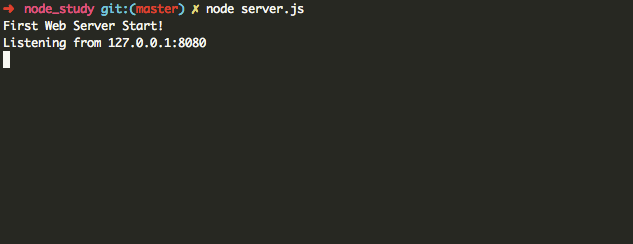
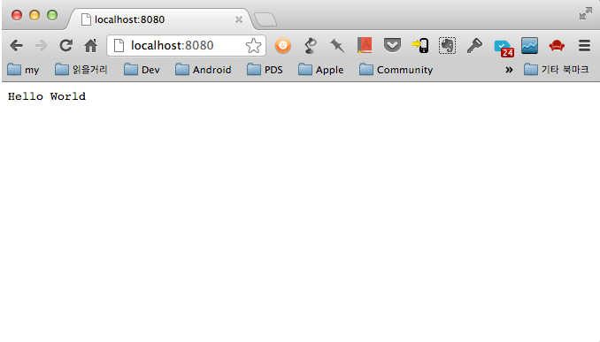
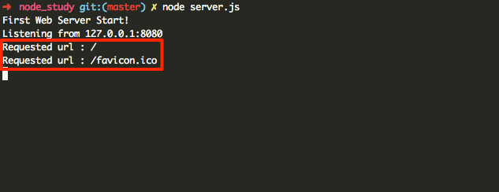
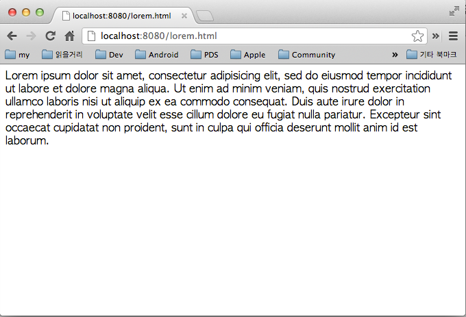
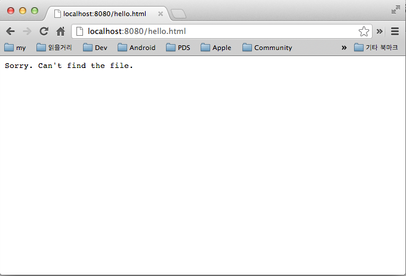

nezz
blog: http://nezz.pe.kr
twitter: @imtaehyun
github: imtaehyun
잠시나마 스티브잡스와 같은길을 걸어본 사람
이번 포스팅에서는 Node를 가지고 간단한 코드를 통해 Apache없이 웹서버를 만드는 방법을 알아보고자 한다.
Node 프로그램을 작성하기 전에 Node.js API Doc을 먼저 살펴보자.
일단 첫번째 서버를 띄워보기 위해서 아래의 코드를 작성해 보자. 파일의 이름은 파일명.js로 하며 여기서는 예제로 server.js로 작성한다.
// 웹서버를 띄우기 위해서는 http를 사용한다. http://nodejs.org/api/http.html 참고.
var http = require("http");
console.log("First Web Server Start!");
// 웹서버 주소와 포트를 설정한다. 로컬에서는 localhost 주소인 127.0.0.1을 쓰고 포트는 임의로 8080으로 설정했다.
var host = "127.0.0.1";
var port = 8080
// 서버의 동작에 대해서 정의 한다. Request가 들어오면 url을 console에 출력하고, 웹페이지에는 'Hello World!!'를 출력한다.
var server = http.createServer(function(request, response) {
console.log("Requested url : " + request.url);
// 요청에 대한 응답의 Header를 설정한다.
response.writeHead(200, {"Content-type" : "text/plain"});
// response.end() 는 응답의 마지막임을 표시함과 동시에 parameter를 웹페이지에 표현한다.
response.end("Hello World");
});
// 생성한 서버가 어떤 IP에 어떤 포트에 응답할 것인지를 정의한다.
server.listen(port, host, function() {
console.log("Listening from " + host + ":" + port);
});
작성이 끝났다면 node server.js로 실행시켜보자.
제대로 작성이 되었다면 에러없이 아래와 같은 결과가 보일 것이다.

그럼 웹페이지에서도 접속해보자. http://localhost:8080으로 접속하면 아래와 같이 Hello World가 찍혀있는 것을 볼 수 있다.

어떤 언어든 Hello World를 찍었으면 반쯤 공부한 셈이다! 시작이 반이라고 하지 않는가?
웹페이지를 접속하면 서버에서는 다음과 같이 반응한다.

위 그림을 보면 우리가 http://localhost:8080을 접속함과 동시에 서버에서는 루트인 /와 브라우저의 주소표시줄 앞의 이미지인 favicon.ico를 접근하려고 했다는것을 알 수 있다.
그러나 지금 작성한 코드는 웹서버이기는 하지만 항상 Hello World만 보여주는 한결같은 서버일 뿐이였다.
그럼 코드를 몇줄 추가해서 지금보다 현실적인 웹서버를 만들어 보자.
위에서 확인한 실행결과를 보면 알 수 있는것이 사용자(Client)가 어떠한 페이지를 접근하려고 하는지 알 수 있음을 알았다.
그럼 그 사실을 이용해서 사용자가 원하는 페이지를 보여줄 수 있도록 해보자. var server부분을 수정해 보자.
var http = require("http");
// html파일을 읽어야 하므로 fs를 사용한다.
var fs = require("fs");
console.log("First Web Server Start!");
var host = "127.0.0.1";
var port = 8080
var server = http.createServer(function(request, response) {
console.log("Requested url : " + request.url);
// 사용자가 요청한 파일을 File System이 읽는다.
fs.readFile("." + request.url, function(err, data) {
if (err) {
// 파일을 읽는데 에러가 발생하여 err이 true인 경우 404 페이지를 보여준다.
response.writeHead(404, {"Content-type" : "text/plain"});
response.end("Sorry. Can't find the file.")
} else {
// 파일 위치가 올바르고 읽는데 문제가 없었다면 해당 문서를 페이지에 출력한다.
response.writeHead(200, {"Content-type" : "text/html"});
response.end(data);
}
});
});
server.listen(port, host, function() {
console.log("Listening from " + host + ":" + port);
});
위 코드를 실행하고 웹페이지를 보면 서버에 존재하는 페이지는 다음과 같이 보인다.

그러나 요청한 페이지가 없다면 404 페이지가 보이게 된다.

지금까지 Node를 가지고 첫번재 웹서버를 만들고 간단한 응용도 해보았다.
다음엔 Express.js라는 모듈을 가지고 더 쉽게 웹서버를 만드는 법에 대해서 알아보고자 한다.
관련링크